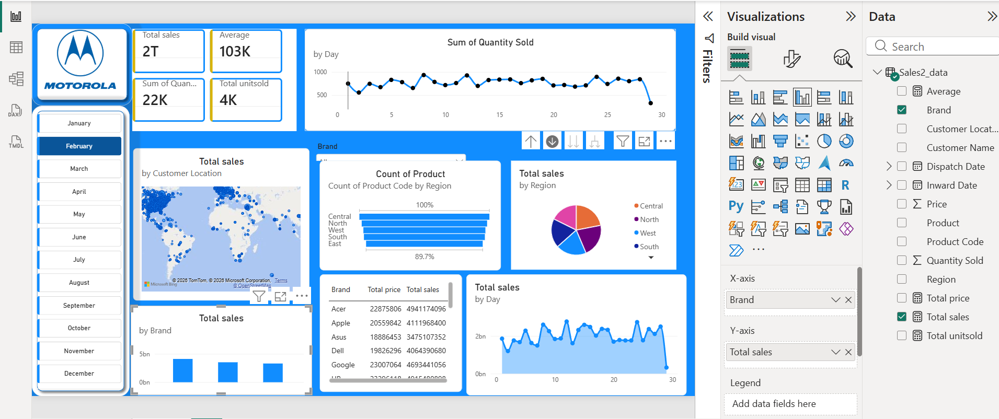
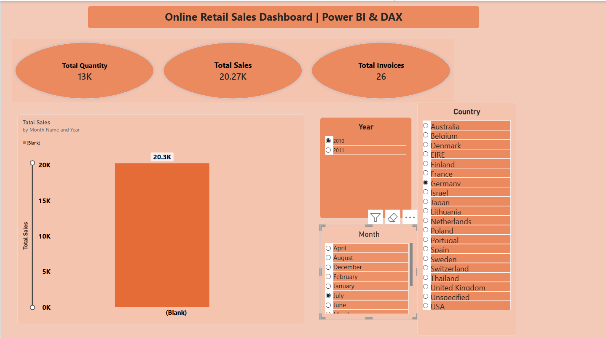

Selected projects

Electricity Billing Management System
- Designed a relational database for electricity billing operations using MySQL.
- Created ER diagrams and structured tables for customers, tariffs, usage records and bills, with keys and relationships that support accurate billing and reliable data retrieval.

Customer Segmentation with RFM Analysis
- Used Python and Pandas to clean transaction data, calculate recency, frequency and monetary metrics, and group customers into actionable segments such as Champions, Loyal Customers and At Risk.

Superstore Sales Analysis
- Analysed sales, regional performance and category revenue with Excel, SQL and Power BI.
- Built interactive dashboards and DAX measures to track key performance indicators, profit margins and seasonal patterns.

UK LinkedIn Job Market Analysis
- Collected and analysed UK data analyst job listings to explore salary ranges, in-demand skills, location patterns and employer requirements, helping job seekers focus their learning and applications.

Mobile Sales Dashboard
- Built interactive Power BI dashboards for sales KPIs, regional performance and top-selling models.
- Explored pricing trends, market share and customer preferences to inform inventory and sales decisions.

Online Retail Sales Dashboard
- Cleaned retail data with Python and built Power BI dashboards to explore sales trends, seasonality, product categories and customer behaviour across time periods and regions.
Amazon Clone Page
- Created a responsive ecommerce homepage with HTML and CSS, including navigation, product grids, hero banners and hover interactions for mobile, tablet and desktop screens.